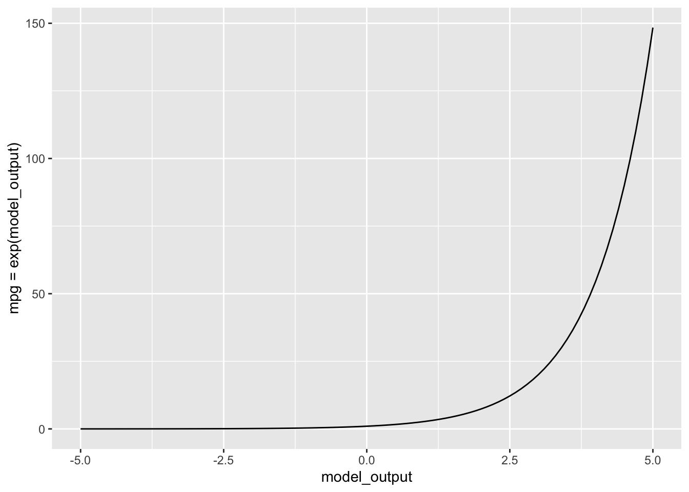

mpg_mod <- lm(mpg ~ hp + wt, data = mtcars)
mpg_mod %>% coef()(Intercept) hp wt
37.22727012 -0.03177295 -3.87783074 The linear models (lm()) we have mostly been using up until now accumulate the model output as a linear combination of model inputs. Consider, for instance, a simple model of fuel economy based on the horsepower and weight of a car:
mpg_mod <- lm(mpg ~ hp + wt, data = mtcars)
mpg_mod %>% coef()(Intercept) hp wt
37.22727012 -0.03177295 -3.87783074 These coefficients mean that the model output is a sum. For instance, a 100 horsepower car weighting 2500 pounds has a predicted fuel economy of 37.2 - 0.032*100 - 3.88*2.5=24.3 miles per gallon.1 If we’re interested in making a prediction, we often hide the arithmetic behind a computer function, but it is the same arithmetic:
mod_eval(mpg_mod, hp = 100, wt = 2.5)| hp | wt | model_output |
|---|---|---|
| 100 | 2.5 | 24.3554 |
The arithmetic, in principle, lets us evaluate the model for any inputs, even ridiculous ones like a 10,000 hp car weighing 50,000 lbs. There is no such car, but there is a model output.2
mod_eval(mpg_mod, hp=10000, wt = 50)| hp | wt | model_output |
|---|---|---|
| 10000 | 50 | -474.3937 |
The prediction reported here means that such a car goes negative 474 miles on a gallon of gas. That’s silly. Fuel economy needs to be non-negative; the output \(-474\) mpg is out of bounds.
A good way to avoid out-of-bounds behavior is to model a transformation of the response variable instead of the variable itself. For example, to avoid negative outputs from a model of mpg, change the model so that the output is in terms of the logarithm of mpg, like this:
logmpg_mod <- lm(log(mpg) ~ hp + wt, data = mtcars)
mod_eval(logmpg_mod, hp = 100, wt = 2.5)| hp | wt | model_output |
|---|---|---|
| 100 | 2.5 | 3.173411 |
The reported output, 3.17, should not be interpreted as mpg. Instead, interpret it as log(mpg). If we want output in terms of mpg, then we have to undo the logarithm. That’s the role of the exponential function, which is the inverse of the logarithm.
mod_eval(logmpg_mod, hp = 100, wt = 2.5) %>%
mutate(mpg = exp(model_output))| hp | wt | model_output | mpg |
|---|---|---|---|
| 100 | 2.5 | 3.173411 | 23.88884 |
The logarithmic transform at the model-training stage does not not prevent the model output from being negative. We can see this by looking at the tank example:
mod_logmpg <- lm(log(mpg) ~ hp + wt, data = mtcars)
mod_eval(mod_logmpg, hp=10000, wt=50) %>%
mutate(mpg = exp(model_output))| hp | wt | model_output | mpg |
|---|---|---|---|
| 10000 | 50 | -21.6327 | 0 |
The model output is negative for the tank, but the model output corresponds to log(mpg). What will keep the model from producing negative mpg will be the exponential transformation applied to the model output. A graph of the exponential function shows how this works.

log(mpg), which can be positive or negative, into mpg, which can only be non-negative.The log transform does not fix the absurdity of modeling tanks based on the fuel economy of cars. The model’s prediction of mpg for the tank is 0.0000000004 miles/gallon, but real-world tanks do much better than that. For instance, the M1 Abrams tank is reported to get approximately 0.6 miles per gallon.
In everyday language, “risk” refers to a dangerous or unwelcome outcome. We talk about the “risk of heart disease” or the “risk of bankruptcy” or other financial loss. To apply risk to a positive outcome is non-idiomatic. For instance, for a person wanting to have a baby, we don’t talk about the “risk of pregnancy,” but about the “chances of becoming pregnant.”
In statistics, the word “risk” is similarly used for an unwelcome outcome. However, an additional component of meaning is added. “Risk” refers to the probability of the unwelcome outcome. In principle, though, it would be entirely equivalent to speak of the “probability of heart disease,” leaving the phrase “heart disease” to signal that the outcome is unwanted. We talk about the “risk of death” but never the “risk of survival.” Instead, we would say something like the “chances of survival.”
The outcomes described by “risk” are categorical. Generically, the levels of the categorical variable might be “unwelcome” and “not unwelcome,” but they might be more specifically named, say, “death” and “survival,” or “lung disease” and “not.”
We have been building models of such categorical output variables from the start of these Lessons. For the zero-one categorical variables we have emphasized, the model output is in the form of a probability: the probability of the outcome of the event being “one” (or whatever actual level “one” corresponds to.) If we assign one for “death” and zero for “survival,” the probability which is the output of a model is a risk, but other than the choice of zero-one assignment, there is no mathematical difference (in statistics) between a risk and a probability.
It often happens that risk depends on other factors, often called “risk factors.” In our modeling framework, such risk factors are merely explanatory variables. For instance, a study of the impact of smoking on health might use outcome represented by a categorical response variable with levels “death” or “survival.”
To summarize, for statistical thinkers a model of risk takes the usual form that we have used for models of zero-one categorical models. All the same issues apply: covariates, DAGs, confidence intervals, and so on. There is, however, a slightly different style for presenting effect sizes.
Up until now, we have presented effect in terms of an arithmetic difference. As an example, we turn to the fuel-economy model introduced at the beginning of this lesson. Effect sizes are about changes. To look at the effect size of, say, weight (wt), we would calculate the model output for two cars that differ in weight (but are the same for the other explanatory variables). For instance, to know the change in fuel economy due to a 1000 pound change in weight, we can do this calculation:
mod_eval(logmpg_mod, hp = 100, wt = c(2.5, 3.5)) %>%
mutate(mpg = exp(model_output))| hp | wt | model_output | mpg |
|---|---|---|---|
| 100 | 2.5 | 3.173411 | 23.88884 |
| 100 | 3.5 | 2.972875 | 19.54803 |
The lighter car is predicted to get 24 mpg, the heavier car to get 19.5 mpg. The arithmetic difference in output \(19.5 - 24 = -4.5\) mpg is the effect of the 1000 pound increase in weight.
There is another way to present the effect, as a ratio or proportion. In this style, the effect of an addition 1000 pounds is \(19.5 / 24 = 81\%\), that is, the heavier car can go only 81% of the distance that the lighter car will travel on the same amount of gasoline. (Stating an effect as a ratio is common in some fields. For example, economists use ratios when describing prices or investment returns.)
In presenting a change in risk—that is, the change in probability resulting from a change in some explanatory variable—both the arithmetic difference and arithmetic ratio forms are used. But there is a special terminology that is used to identify the two forms. A change in the form of an arithmetic difference is called an “absolute change in risk.” A change in the ratio form is called a “relative risk.”
The different forms—absolute change in risk versus relative risk—both describe the same change in risk. For most decision-makers, the absolute form is most useful. To illustate, suppose exposure to a toxin increases the risk of a disease by 50%. This would be a risk ratio of 1.5. But that risk ratio might be based on an absolute change in risk from 0.00004 to 0.00006, or it might be based on an absolute change in risk from 40% to 60%. The latter is a much more substantial change in risk and ought to warrant more attention from decision makers interested.
It is important for measures of change in risk to be mathematically valid. But from among the mathematically valid measures, one wants to choose a form that will be the best for communicating with decision-makers. Those decision-makers might be the people in charge of establishing screening for diseases like breast cancer, or a judge and jury deciding the extent to which blame for an illness ought to be assigned to second-hand smoke.
Two useful ways to present a change in risk are the “number needed to treat” (NNT) and the “attributable fraction.” The NNT is useful for presenting the possible benefits of a treatment or screening test. Consider these data from the US Preventive Services Task Force which take the form of the number of breast-cancer deaths in a 10-year period avoided by mammography. The confidence interval on the estimated number is also given.
| Age | Deaths avoided | Conf. interval |
|---|---|---|
| 40-49 | 3 | 0-9 |
| 50-59 | 8 | 2-17 |
| 60-69 | 21 | 11-32 |
| 70-74 | 13 | 0-32 |
The table does not give the risk of death, but rather the absolute risk reduction. For the 70-74 age group this risk reduction is 13/100000 with a confidence interval of 0 to 32/100000.
The NNT is well named. It gives the number of people who must receive the treatment in order to avoid one death. Arithmetically, the NNT is simply the reciprocal of the absolute risk reduction. So, for the 70-74 age group the NNT is 100000/13 or 7700 or, stated as a confidence interval, [3125 to \(\infty\)].
For a decision-maker, NNT presents the effect size in a readily understood way. For example, the 40-49 year-old group has an NTT of 33,000. The cost of the treatment could be presented in terms of anxiety prevented (mammography produces a lot of false positives) or monetary cost. The US Affordable Care Act requires health plans to fully cover the cost of a screening mammogram every one or two years for women over 40. Those mammograms each cost about $100-200. Consequently, the cost of mammography over the ten-year period (during which 5 mammograms might be performed) is roughly \(5\times \$100 \times 33000\) or about $16 million per life saved.
The attributable fraction is a way of presenting a risk ratio—in other words, a relative risk—in a way that is more concrete than the ratio itself. Consider the effect of smoking on the risk of getting lung cancer. According to the US Centers for Disease Control, “People who smoke cigarettes are 15 to 30 times more likely to get lung cancer.” This statement directly gives the confidence interval on the relative risk: [15 to 30].
The attributable fraction refers to the proportion of disease in the exposed group—that is, smokers—to be attributed to expose. The general formula for attributable fraction is simple. If the risk ratio is denoted \(RR\), the attributable fraction is \[\text{attributable fraction} \equiv \frac{RR-1}{RR}\] For a smoker who gets lung cancer, the confidence interval on the attributable fraction is [93% to 97%].
For second-hand smoke, the CDC estimates the risk ratio for cancer at [1.2 to 1.3]. For a person exposed to second-hand smoke who gets cancer, the attributable fraction is [17% to 23%]. Such attributions are useful for those, such as judges and juries, who need to assign a level of blame for a bad outcome.
A probability—a number between 0 and 1—is the most used measure of the chances that something will happen, but it is not the only way nor the best for all purposes.
Also part of everyday language is the word “odds,” as in, “What are the odds?” to express surprise at an unexpected event.
Odds are usually expressed in terms of two numbers, as in “3 to 2” or “100 to 1”, written more compactly as 3:2 and 100:1 or even 1.5 and 100, respectively. The setting for odds is an even that might happen or not: the horse Fortune’s Chance might win the race, otherwise not; it might rain today, otherwise not; the Red Sox might win the World Series, otherwise not.
The format of a probability assigns a number between 0 and 1 to the chances that Fortune’s Chance will win, or that it will rain, or that the Red Sox will come out on top. If that number is called \(p\), then the chances of the “otherwise outcome” must be \(1-p\). The event with probability \(p\) would be reformatted into odds as \(p:(1-p)\). No information is lost if we treat the odds as a single number, the result of the division \(p/(1-p)\). Thus, when \(p=0.25\) the corresponding odds will be \(0.25/0.75\), in other words, 1/3.
A big mathematical advantage to using odds is that the odds number can be anything from zero to infinity; it’s not bounded within 0 to 1. Even more advantageous for the purposes of accumulating risk is the logarithm of the odds, called “log odds.” We will come back to this later.